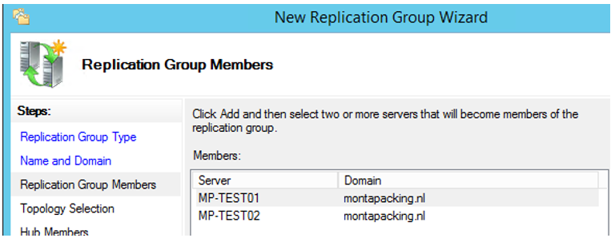
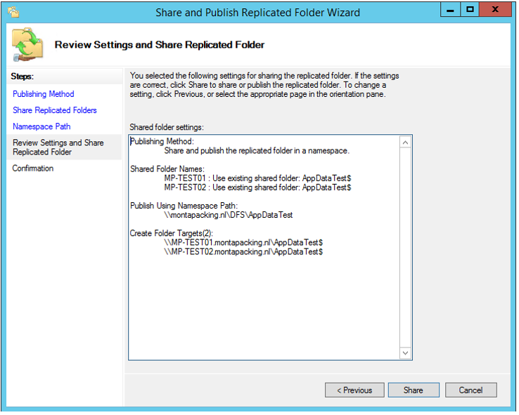

DFS replicatie Fileservers aanmaken
Inrichting Servers
Voor het MP-FSCLUS01 is er een DFS Namespace voor Appdata op 2 servers
ingericht. Op zich werkt dit, zie
\\montapacking.nl\dfs\Appdata.
De files staan op de MP-FS100 en de MP-FS200, waarbij de MP-FS100 (die
in Eindhoven staat) preferred is.
Er is ook een testomgeving ingericht :
\\montapacking.nl\dfs\AppdataTest,
de files hiervan staan op de MP-Test01 en de MP-Test02 waarbij de
MP-Test01 preferred is.
Als bijvoorbeeld de MP-FS100 niet bereikbaar is duurt het een aantal minuten (kan in ieder geval niet minder dan 40 seconden zijn=SMB-timeout) voordat er overgeschakeld wordt naar de MP-FS200. Verder blijft de connectie met de MP-FS200 5 minuten actief. Dat is de ingestelde cache referral. Het lijkt niet verstandig om dat korter te zetten, omdat dat teveel netwerkverkeer oplevert.
https://www.reddit.com/r/sysadmin/comments/55m3kb/lowest_realistic_cache_setting_in_dfsr/
What happens is, both referrals stay active and on first attempt to access the namespace target, the clients wait for SMB timeout to happen, which is about 40 seconds and it is hardcoded in Windows IIRC. Then after the timeout, the clients select the secondary referral that is actually online, and remember to use that until the next referral cache update.
Dit is het maximaal haalbare en dit vinden we acceptabel.
Development dient de software aan te passen om eorderattachments e.d.
naar
\\montapacking.nl\dfs\Appdata.
te schrijven.
Aanmaak Namespace
Aanmaak Shares
Aanmaak Replication


Kies op tabblad "Replicated Folders" voor "Share and Publish in namespace".

Pas de Referrals als volgt aan:
Stel de Staging in met het juiste Quota.
Kies een juist Quota volgens : <https://docs.microsoft.com/en-us/previous-versions/orphan-topics/ws.11/dn465158(v=ws.11)?redirectedfrom=MSDN>
Er zijn ook adviezen om de Staging Quota gelijk te maken aan de
hoeveelheid data.
Omdat er heel veel ruimte is vrijgekomen op de E-schijf van de
MP-FS100/MP-FS200 is hier nu voor gekozen.
Ooit was er een aparte (kleine) partitie aangemaakt (F:\) voor de Staging, deze wordt niet meer gebruikt.
Omdat de DFS Namespace aangemaakt is op de MP-TEST01 / MP-TEST02 zijn later als Namespace servers MP-FS100 en MP-FS200 toegevoegd en zijn de MP-TEST01 / MP-TEST02 gedisabled.
Diversen
<https://serverfault.com/questions/50789/long-pause-when-accessing-dfs-namespace>